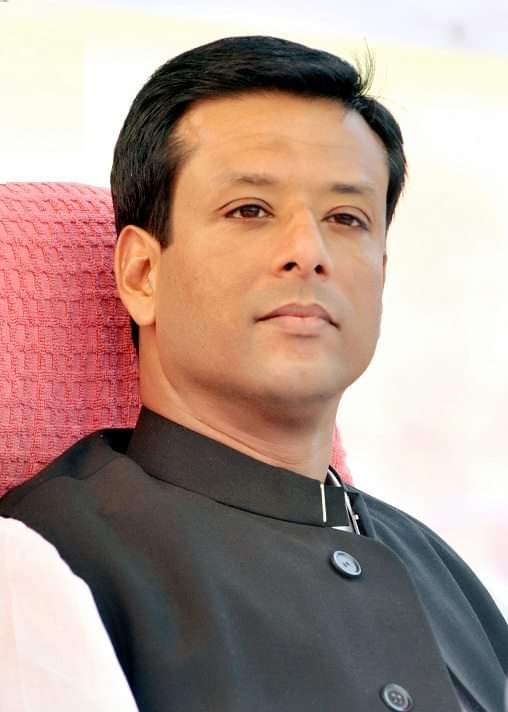

Sheikh Hasina was married to a Bangladesi prominent scientest Mr.M.A.Wazed Miah in 1968. After her marriage, Sheikh Hasna continued her studies and graduate from the University of Dhaka.They have a son Sajeeb and a daughter Saima. Her husband Wazed Miah died on May 09, 2009.
Son's of Sheikh Hasina Sajjeb
Daughter's of Sheikh Hasina of Saima